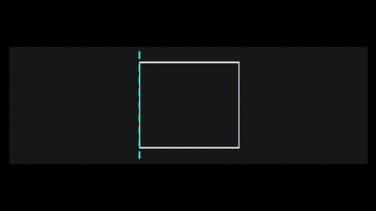
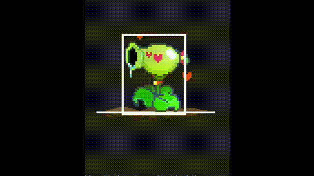
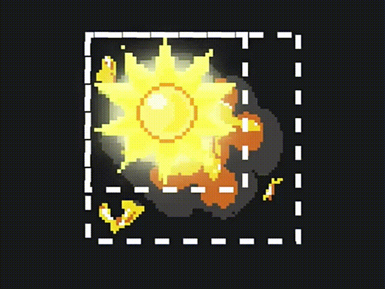

Table of Contents
- Development Workflow – Gameplay Layer
- Key Steps and Solutions – Gameplay Layer
- Overall Code Review and Source Code
- Reflection and Summary
This article dives into the implementation of the gameplay layer in detail and concludes with a link to the full project source code. If you’d like to revisit the overall project structure and framework design, check out the companion post: Plant Star Brawl - Framework Design.
Development Workflow - Gameplay Layer
-
Main Menu and Character Selection Screens
- Challenge 1: Where should the main camera be placed, given that the project uses a camera class?
- Solution: Pass the camera as a parameter to rendering functions.
- Challenge 2: How can we give text a 3D or embossed effect?
- Solution: Render the text twice—once in white at the original position, and once in gray slightly offset downward and to the right.
- Challenge 3: How can we create a scrolling silhouette effect on the selection screen background
- Solution: Draw the same image twice with offset positions to simulate motion.
- Challenge 1: Where should the main camera be placed, given that the project uses a camera class?
-
In-Game Scene Setup and Physics Simulation
- Challenge 1: How do we simulate gravity?
- Solution: Gravity is represented by falling and stopping. Encapsulate platform logic in a dedicated class.
- Challenge 2: How can we visually inspect collision data?
- Solution: Implement a simple debug mode to visualize hitboxes and physics boundaries.
- Issue 1: Why does the player sometimes teleport upward during a fall?
- Solution: Use the player’s foot position from the previous frame to determine whether to correct their position in the current frame.
- Issue 2: How do we prevent repeated jumping (multi-jump bugs)?
- Solution: Ensure the player can only jump when their vertical velocity is zero.
Bullet Base Class Implementation
- Core Gameplay Mechanic: Players deal damage using projectile-like bullets.
- Solution: Create a base
Bulletclass, with specific bullet types inheriting from it.
- Solution: Create a base
- Challenge: How should bullets disappear after collision?
- Solution: Use callback functions, similar to how death animations are handled for players.
- Bullet Deletion Optimization
- Challenge 1: How do we simulate gravity?
-
Pea Bullet Subclass Implementation
-
Sun Bullet Subclass, Sun Bullet Ex Subclass Implementation
- Note: Adjust sprite offsets during explosion animations for accurate visual alignment.
-
Attack Skill System
- Use timers to track cooldown durations for special abilities
-
Invincibility Frames
- Solution: During certain animations, alternate between normal sprites and pure white silhouettes to indicate invulnerability.
-
Player Status Bar (Health and energy levels)
-
Particle System
-
Win/Loss Detection and Endgame Effects
Key Steps and Solutions - Gameplay Layer
Building the Main Menu Scene and Character Selection Scene
Handling the Camera
Where should the main camera be placed?
Since this project includes a dedicated Camera class, each scene must be able to access the camera object during rendering to draw the game world relative to its position. There are three possible approaches:
Option 1:
Define the camera as a member variable inside each scene class. However, this makes it difficult to share camera data across scenes.
Option 2:
Define the camera as a global variable, similar to how image resources are handled. We could use the extern keyword to access it. But global variables tend to clutter the design and conflict with our goal of encapsulating data and minimizing global state.
Option 3:
Take inspiration from how delta (elapsed time) is passed into update functions like void on_update(int delta). We apply the same idea to rendering: pass the camera as a parameter using void on_draw(const Camera& camera).
Implementing the Main Menu Scene
Once the camera handling strategy is decided, here’s the full implementation of the main menu scene:
|
|
Implementing the Selector Scene
Character Type Design Tip
We start by defining an enumeration for the available player character types. Why include an “Invalid” character type? It acts as a safeguard to ensure that selection logic doesn’t go out of bounds. This helps prevent bugs when navigating the character list and makes the system more robust.
|
|
Example: Switching Player 1’s Character to the Left
To implement leftward character selection for Player 1, we follow a safe and bounded approach using the PlayerType enumeration:
- Convert the current enum value to an
intand subtract 1 This moves the selection one step to the left. - Add the
intvalue ofPlayerType::InvalidThis ensures the result is non-negative, even if the original value was 0. - Take the result modulo
PlayerType::InvalidThis wraps the value around if it goes below the first valid type, keeping it within bounds. - Cast the final result back to
PlayerTypeThis gives us a valid enum value within the range[Peashooter, Invalid)—a half-open interval that excludes theInvalidsentinel.
This technique guarantees that the selected character type always stays within the valid range, and avoids out-of-bounds errors when navigating the character list.
|
|
Integrating the Camera into the Animation Class
Since every animation needs to access the camera’s position during rendering, and this logic is repeated across all animation draws, we apply object-oriented encapsulation to streamline it.
Instead of calculating world position - camera position externally, we move this logic into the Animation class itself. As a result, the on_draw method is updated to: void on_draw(const Camera& camera, int x, int y) const . This allows each animation to handle its own coordinate transformation internally, keeping rendering logic clean and consistent.
Implementing the Scrolling Silhouette Background Effect
A simple way to create a scrolling background is to render the same image twice. Imagine a vertical reference line moving from the left edge of the screen to the right. When it reaches the far edge, it jumps back to the start.
We draw one copy of the image to the left of the line, and another to the right. This creates a seamless scrolling loop.
Update Logic:
|
|
To render cropped sections of an image with alpha blending, we overload putimage_alpha:
|
|
We scroll Player 2’s silhouette across Player 1’s background, and vice versa:
|
|
Physics Engine Implementation
Platform Class Design
We start by designing the platform collider based on its functional role. In most 2D platformer games, platforms are typically one-way colliders—players can land on them from above, but jump through them from below. This means we only need to determine where the player can “stand,” so we abstract the platform collider as a single horizontal line.
It’s important to note that while the platform’s position is stored in the collider structure, we still need to separately track its rendering position. This is because the platform image has thickness, and its top edge may not align with the collision line. Typically, the collision line is slightly above the visible top of the platform image, which better matches player expectations visually.
This design also aligns with our broader architectural principle of separating data logic from rendering. During collision detection, we only care about the CollisionShape data. During rendering, we only care about the image and its draw position. This reinforces decoupling and keeps the code clean.
To support debugging, we add a simple debug mode that draws the collision line when enabled. Here’s the full implementation of the Platform class:
|
|
Player Base Class Design
All shared data and logic for players are encapsulated in a base Player class. Specific characters like Peashooter and Sunflower inherit from this base and implement their own behavior.
How are player objects instantiated?
Since there are two player types, the actual class to instantiate depends on the character selected during the character selection phase. This logic belongs in the selector scene, but the instantiated player objects are also needed in the gameplay scene. The simplest solution is to define them globally, just like other cross-scene resources.
Here’s how the instantiation logic looks in the selector scene:
|
|
In addition, each player needs to store their position in world coordinates using Vector2 position;. Animation definitions should also be included, with each subclass specifying which atlas to use for rendering.
Handling player input and mapping key events to gameplay logic should be implemented in the base class. To differentiate controls between Player 1 and Player 2, we assign a player index as a member variable. This allows input handling logic to branch based on the player’s identity.
One-Way Platform Collision and Gravity Simulation
Gravity Simulation
In a free-fall scenario, two key values govern motion: gravitational acceleration and the object’s current velocity. Throughout the simulation, objects in the scene are constantly pulled downward by gravity, accelerating vertically over time.
To model this, we define a gravity constant in the Player class: const float gravity = 1.6e-3f; . This value may seem arbitrary, but in game development, gravity is often tuned to suit the game world’s scale, visual proportions, and player feel. It doesn’t need to match real-world physics—it just needs to produce the right gameplay effect.
All physics-related logic is placed in the move_and_collide(int delta) method. Gravity simulation itself only requires two lines:
|
|
One-Way Platform Collision Detection
To detect collisions between the player and platforms, we check for horizontal overlap between a rectangle (the player) and a line (the platform). Specifically:
- Calculate the difference between the rightmost and leftmost edges of both shapes.
- If this difference is less than the sum of their widths, they overlap horizontally.
Vertical collision is simpler: check whether the platform’s Y-coordinate lies between the player’s top and bottom edges. Only when both horizontal and vertical conditions are met do we consider a collision.
Position Correction Logic
Once a collision is detected, we need to adjust the player’s position so they land on the platform. However, naïvely snapping the player’s feet to the platform can cause visual glitches—especially when the player jumps upward and only partially intersects the platform before falling.
To fix this, we ensure that the player’s entire body has passed through the platform before snapping them onto it. We calculate the player’s foot position from the previous frame and only apply correction if it was above the platform.
Here’s the refined collision logic:
|
|
Character Skill System
Functional Requirements
This project features two playable characters: Peashooter and Sunflower. Each has a basic attack and a special skill.
- Peashooter: Fires pea bullets in the direction they’re facing. Hitting the opponent builds energy. Once full, Peashooter unleashes a rapid burst of pea bullets as a special attack.
- Sunflower: Throws sun bombs diagonally upward. These projectiles are affected by gravity, making them harder to aim but more rewarding. When energy is full, Sunflower summons a giant sun bomb above the opponent’s head, dealing massive area damage and granting high energy returns.
From a design perspective, both characters rely on projectile-based combat. This allows us to unify all projectile logic under a single base class: Bullet.
Each projectile type—pea bullet, sun bomb, super sun bomb—can inherit from Bullet and implement its own update and rendering logic. Differences like animation, damage radius, and behavior are handled in the subclasses.
Bullet Deactivation and Removal Logic
Just like how we handle player death animations in the Animation class, bullets should be marked as invalid immediately upon hitting an enemy. This prevents them from colliding multiple times in subsequent frames. However, since we want to play destruction animations—like the pea bullet shattering or the sun bomb exploding—we can’t remove the bullet object from the scene right away.
Instead, each bullet goes through three distinct states:
- Active: The bullet is moving and checking for collisions.
- Inactive: The bullet has collided and is playing its destruction animation. Collision checks are disabled.
- Removable: The animation has finished, and the bullet can now be deleted from the scene.
This state logic is reflected in the bullet’s member variables:
|
|
Optimizing Bullet Removal
If bullets are only removed upon collision, those that miss will remain in memory indefinitely—leading to memory leaks. To prevent this, we also check whether a bullet has moved off-screen. This logic is common to all bullet types, so we define a helper method in the base class:
|
|
Full Bullet Base Class
|
|
Note:
In practice, it’s rare to design a game object class completely top-down from the start. Class design is often an iterative process—built and refined as the project evolves. We typically start with a rough structure and improve it through trial, error, and usage. Top-down design requires experience and foresight, but with continued practice, you’ll become more comfortable and confident in applying this approach.
Pea Bullet Class Design
The Peashooter character fires only one type of bullet. The difference between normal and special attacks lies in the firing rate. To make the game feel more dynamic, we use three different sound effects and randomly play one when a pea bullet hits its target. This technique is common in game development—for example, footsteps or gunshots often use varied audio clips to make the experience feel more natural and lively.
To implement this, we override the on_collide method in the PeaBullet subclass and add randomized sound playback. Importantly, when overriding a method but still needing to execute the base class logic, we must explicitly call the parent method.
Here’s the complete implementation of the PeaBullet subclass:
|
|
Building on the
Bulletbase class, thePeaBulletsubclass only needs to extend a few unique behaviors to deliver a complete projectile implementation. This elegantly demonstrates the power of inheritance in object-oriented design: shared logic lives in the base class, while specialized behavior is layered on top with minimal duplication. It’s a clean, maintainable approach that scales well as new projectile types are introduced.
Sun Bullet Class Implementation
One important detail when implementing the sun bomb is that its explosion animation frames are slightly larger than its idle animation frames. To ensure the explosion renders correctly, we need to align the centers of both animation rectangles. Since EasyX uses the top-left corner as the origin for rendering, we apply a small positional offset during the explosion animation to visually center it.
Unlike the pea bullet, which continues flying after impact to simulate a splash effect, the sun bomb should remain stationary once it explodes. It’s affected by gravity while active, but its explosion animation plays in place.
Here’s the full implementation of the SunBullet class:
|
|
Sun Bullet Ex Class Implementation
Sunflower’s special skill summons a massive sun bomb from off-screen. Unlike the standard sun bomb, this projectile is larger, stronger, and unaffected by gravity. It descends slowly, acting as a zoning tool to restrict enemy movement and make smaller bombs easier to land.
To give it a broader hitbox, we override the check_collision method to use rectangle-based collision detection instead of a single center point.
Here’s the full implementation of the SunBulletEx class:
|
|
From a design perspective, the super sun bomb could inherit from the standard sun bomb to reduce duplication. However, this project opts for a flatter inheritance structure to keep the codebase easier to read and maintain.
Skill System
To implement character skills, we define two virtual methods in the Player base class: virtual void on_attack and virtual void on_attack_ex. Each player subclass overrides these methods to implement its own normal and special attack logic. This keeps the skill system extensible and cleanly separated across character types.
Attack Cooldown Implementation
Most characters in action games have a cooldown period between normal attacks. During this time, pressing the attack key has no effect. To implement this, we define a boolean flag can_attack to indicate whether the character is currently allowed to perform a normal attack. We also use a timer to track the cooldown duration, represented by an int value in milliseconds.
The logic is simple:
- When an attack input is received, check if
can_attackis true. - If so, flip the flag to false and start the cooldown timer.
- Once the timer completes, reset
can_attackto true.
This ensures that attacks can only be triggered after the cooldown period has passed.
Invulnerability State Implementation
To implement temporary invincibility (often triggered after taking damage), we use two boolean flags:
bool is_invulnerable = false;— indicates whether the character is currently invincible.bool is_showing_sketch_frame = false;— controls whether the character should render as a white silhouette for visual feedback.
We use two timers to manage the invulnerability logic:
timer_invulnerable— controls the duration of invincibility.timer_invulnerable_blink— toggles between normal and sketch-frame rendering to create a blinking effect.
Here’s how these timers are initialized in the Player constructor:
|
|
To render the character as a white silhouette during invulnerability, we add a utility function in Util.h. This function processes the image’s pixel buffer and sets all pixels to white. For a detailed explanation, refer to the bonus section of the article Teyvat Survivors.
|
|
In the on_update method, we update all timers accordingly.
|
|
We apply the sketch rendering logic inside the on_draw method:
|
|
To activate invulnerability after taking damage, we add a dedicated method to the Player class:
|
|
Then, inside the move_and_collide method, we update the bullet collision logic to trigger invulnerability when the player is hit:
|
|
Particle System Implementation
A particle system is a technique that uses large numbers of small graphical elements (particles) to simulate complex visual effects like smoke, fire, rain, or explosions. When designing a particle system, we typically break it down into two components:
- Particle objects: Represent individual particles, each with properties like animation, physics, and lifespan.
- Particle emitters: Control how particles are generated—frequency, direction, initial velocity, etc.
In this project, we implement a lightweight particle system. Each particle behaves like a specialized animated object. Unlike characters or bullets, particles remain fixed in world space once emitted. After their animation finishes, they expire and are removed from the scene.
Here’s the complete Particle class:
|
|
Overall Code Review and Source Code
Scene Base Class
This project introduces the concept of scene management for the first time. Each stage or interface in the game corresponds to a distinct scene. In the base class Scene.h, the on_enter and on_exit methods handle scene initialization and teardown respectively. The on_input, on_update, and on_draw methods correspond to the input, update, and rendering phases of the main loop, each receiving the necessary parameters. Subclasses only need to override these methods to implement their own logic.
The scene manager controls which scene is currently active. When switching scenes, we use an enum to abstract away direct scene pointers. The manager itself also exposes on_input, on_update, and on_draw methods that delegate to the current scene instance.
Main Function
In main.cpp, we implement two core responsibilities: resource loading and game entry point. First, we load pixel fonts and animation assets, including mirrored versions for directional rendering. Then we load background music and sound effects. In the entry function, we initialize resources, instantiate the initial scene, and invoke the scene manager’s lifecycle methods within the main game loop.
Atlas Class
For animation handling, we encapsulate an Atlas class that acts as a container for loading and storing image sequences. The Animation class is a lightweight manager that tracks playback progress. It doesn’t store image data directly—instead, it queries the atlas for the current frame. The animation class also handles frame intervals, looping, and end-of-playback callbacks.
Camera Class
Rendering uses a custom Camera class that serves as an anchor for relative positioning. By randomly jittering the camera’s position within a small range, we simulate a screen shake effect. To simplify camera-based rendering, we overload utility functions in Util.h for alpha blending, image flipping, and generating white silhouette effects.
Timer and Vector2 Classes
Two foundational utility classes support the framework: Timer and Vector2. The Timer class tracks elapsed time and triggers callbacks when a preset duration is reached. The Vector2 class handles 2D vector math, including overloaded arithmetic operators, length calculation, and normalization.
Scene Subclasses: MenuScene, SelectorScene, GameScene
The game starts in the menu scene, which simply plays music and handles scene transitions. The character selection scene uses hardcoded layout logic to render UI elements, dynamically draws character previews based on player choices, and handles input for both players using separate key mappings. Upon exiting the selection scene, we instantiate the chosen characters and assign their avatars and player IDs, which are defined in PlayerID.h.
The in-game scene handles three main areas:
- World elements like background and platforms
- Player-related elements like characters and bullets
- Game state elements like health tracking and victory conditions
Debug mode toggling is also managed within the game scene.
Player Base Class
The Player base class encapsulates shared logic for all characters. Visually, players have animations for idle, running, attacking, and dying, along with particle effects for jumping, landing, and running. Logically, normal and special attacks are controlled via cooldown timers and energy values. Movement actions like jumping and landing are wrapped in dedicated methods for easy triggering and animation updates.
Damage triggers a brief invulnerability period with a blinking visual effect, managed by timers. Physics simulation is handled in the move_and_collide method, which updates position based on gravity and velocity, and performs collision checks with platforms and bullets.
Peashooter and Sunflower Subclasses
With the base class in place, implementing the Peashooter is straightforward—just configure its animations and define bullet spawning logic. We also use randomized sound effects to enhance feedback.
Sunflower follows a similar pattern, but its special attack includes an extra “sun” animation above the character’s head, requiring a custom rendering override.
Bullet Base Class
Bullets are abstracted via the Bullet base class. Like players, bullets move through the scene and may be affected by gravity. We track velocity and update position accordingly. Bullets also store damage values, target IDs, and collision callbacks.
PeaBullet, SunBullet, and SunBulletEx Subclasses
The PeaBullet subclass overrides the collision method to play randomized sound effects and switches rendering logic based on whether the bullet has shattered. The SunBullet simulates gravity until impact, then plays an explosion animation with center alignment adjustments. The SunBulletEx is larger and stronger, descending at a constant speed rather than accelerating under gravity.
Particle Class
Particles are treated as lightweight animated objects. Once their animation finishes, they expire and are removed from the scene. Their update logic closely resembles that of the Animation class.
Platform Class
Platforms are represented as horizontal lines in world space. For rendering, we use image assets and optionally draw debug overlays depending on the debug mode.
StatusBar Class
Each player’s status bar consists of three components: avatar, health bar, and energy bar. During gameplay, we continuously read these values from the player object and render them in the UI.
With that, this project’s notes are complete.
Full Source Code
Reflection and Summary
This was my first time studying how a complete game project is designed from the top down. At the beginning, the framework felt abstract and hard to grasp—especially without something like the gameplay layer to test things frequently and intuitively. I often felt unsure of whether I was on the right track. But once the foundational structure was in place, building out the gameplay layer became a smooth and satisfying process. Everything started to click into place.
Even with the experience I gained from the previous Teyvat Survivor project, this one was filled with intricate implementation details. A single oversight could easily lead to unexpected bugs. Some of the design ideas would have been difficult—or even impossible—for me to come up with on my own without falling into common pitfalls. Thankfully, the instructor’s explanations were clear, and the code was clean and easy to follow, which made the learning process much more approachable.
This project made me realize once again where I currently stand in my programming journey: just when I feel like I’ve understood something, I discover how much more there is that I don’t know. And that’s okay. It’s a reminder to keep sharpening my skills and stay committed to continuous learning.